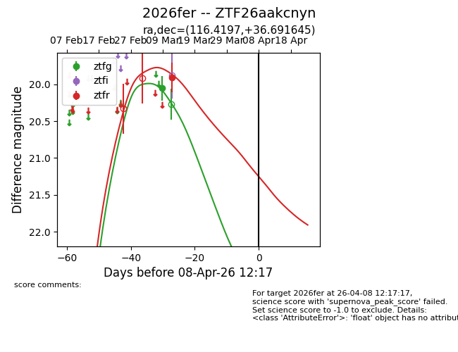
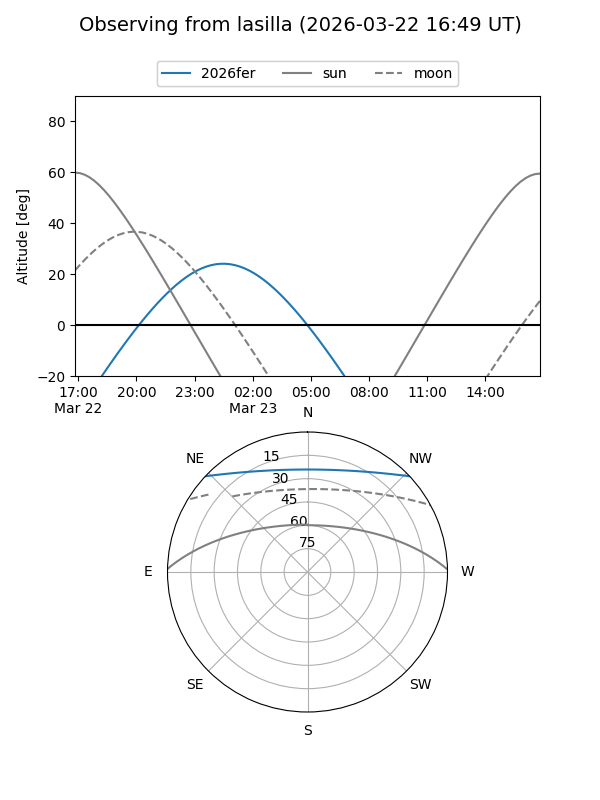
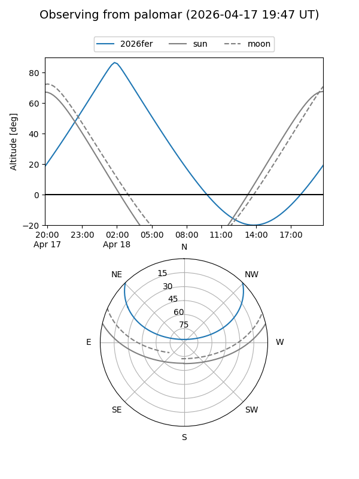
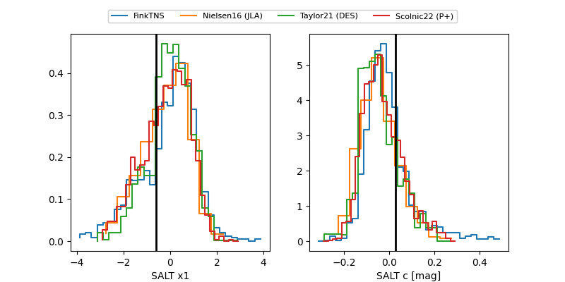

2026fer
Target 2026fer at 2026-04-08 12:22
Aliases and brokers:
FINK: link
Lasair: link
ALeRCE: link
TNS: link
YSE: link
alt names
ZTF26aakcnyn (ztf,fink_ztf)
2026fer (tns,yse)
Coordinates:
equatorial (ra, dec) = 116.4197,+36.69164
equatorial (HMS+DMS) = 07:45:40.72,+36:41:29.92
galactic (l, b) = (183.1532,+26.08990)
Flags:
Photometry:
last ztfg=20.05, ztfr=19.91
1 ztfg, 1 ztfr detections
Lightcurve

Visibility


Additional plots
